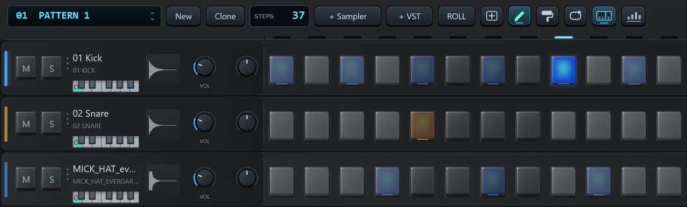
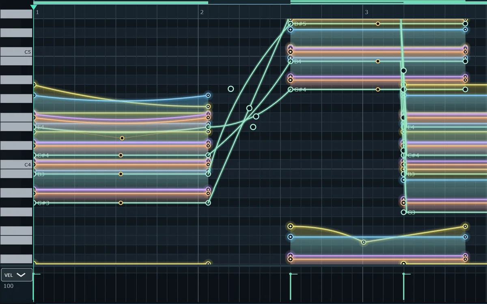
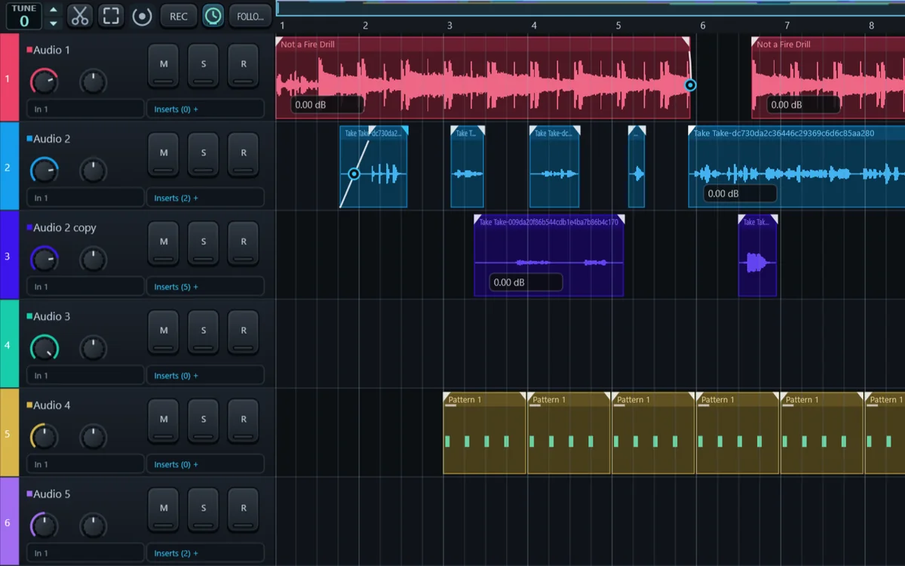
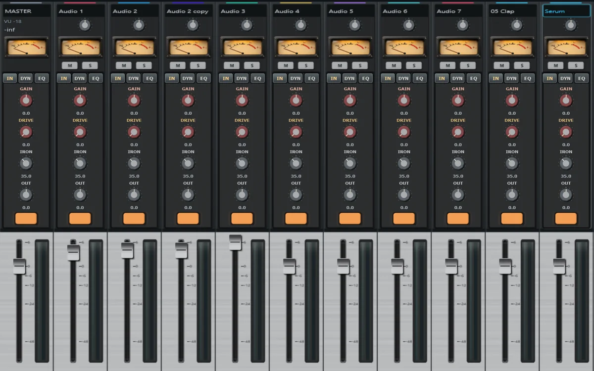

Produce
Make beats. Chop samples, sequence drums, generate chords, and bend notes.


Dive in. Produce, record, and mix without boundaries.
Download COOK for WindowsBeta 0.1.0 · Windows 10 and 11, 64-bit · 363 MB

Make beats. Chop samples, sequence drums, generate chords, and bend notes.


Punch in, stack takes, and comp vocals in a familiar workflow.

Shape your sound with a console mixer and built-in effects.
